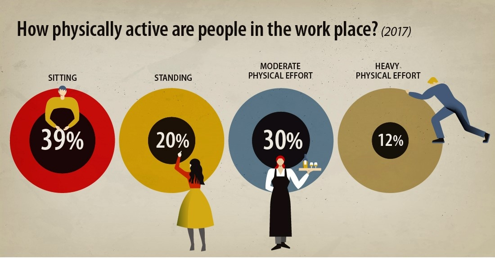

By Stephanie Y, Veer R, Steven L
As more and more people start to work desk jobs, bad posture is becoming an increasingly frequent problem in today's society. More than 39% of Americans worked deskjobs in 2016 and the number still grows today. With this increasing number of people who sit in front of a desk or computer for multiple hours on a regular basis, bad posture has affected the general health of people worldwide. To address this problem, we created a software that will recognize bad posture and help you fix it.

Good posture can help you in many ways. It can k
eep bones and joints in the correct position, help cut down on the wear and tear of joint surfaces, prevent the spine from becoming fixed in abnormal positions, prevent fatigue because muscles are being used more efficiently, and prevent backache and muscular pain.
Tip 1
Stand up straight and tall. This helps with keeping the spine bending abnormally.
Tip 2
Keep your shoulders back. Because mos desk jobs require workers to lean forward, the shoulders protrude forwards. Keeping the shoulders back will counter this.
Tip 3
Exercise regularly. There is nothing better for a healthy body than exercise. Exercise is especially goo it strengthens the necessary muscles.
created with
Website Builder Software .